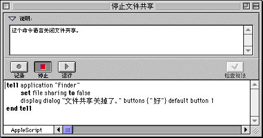

|
|
|
|
AppleScript |
�� AppleScript ����ʲô��
AppleScript ���ڽ��� Mac OS �ij���������ԡ�AppleScript �����������һ������Ҫ�������¼��б������������ԣ���ʹ�����ִ���б��ϵ�ÿ���¡�
����ʹ�����������Զ�ִ�������������磬�������Կɰ�������Ҫ�ķ�ʽ��һ���ű��Ÿ�ʽ�������洢���ض����ļ����У�Ȼ���ӡ������Ҳ��ʹ�������������Ӧ�ó���ĸ��ֹ��ܡ����磬�������Կ�ʹ�õ��ӱ���ļ������������ִ��������ı��Ÿ�ʽ���������Ʒ�Ʊ��
�����ͼƬ��ʾ��AppleScript �������Ա༭����һ����������ʾ����

��ο�ʼ��
AppleScript �ļ�����Ӳ���ϵ� Apple Extras �ļ����С�AppleScript �ļ���������һ����Ϊ���Զ��������ļ��С����������������Ե�ͼ�����С��Զ��������ļ����е��κ��������ԡ�
������Ӧ�ó����У��ɴ��������Ա༭�����㰴����¼����ť��Ȼ��ִ��һϵ�в����������������ԡ��ڼ�¼��������� AppleScript ������������¼����б����رռ�¼��֮�����ɿ�����¼�µ��������ԡ���������������ʱ����������Զ��ظ��������IJ�����
Ҫ��ȡ������Ϣ��
��鿴 AppleScript �ļ����еġ�ʹ�� AppleScript���ĸ塣
��������ӵ� Internet����鿴 AppleScript Web վ������ַΪ��(http://www.applescript.apple.com)��
���˵� | ����
- � 1997 Apple Computer, Inc. All rights reserved.
- � 1997 ƻ�����Թ�������˾����Ȩ���С�